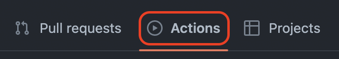
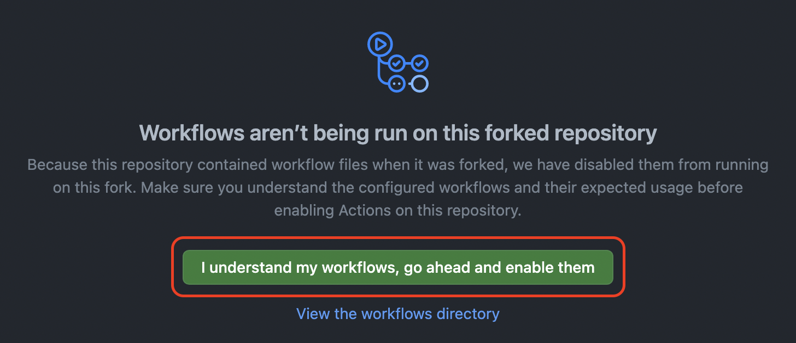
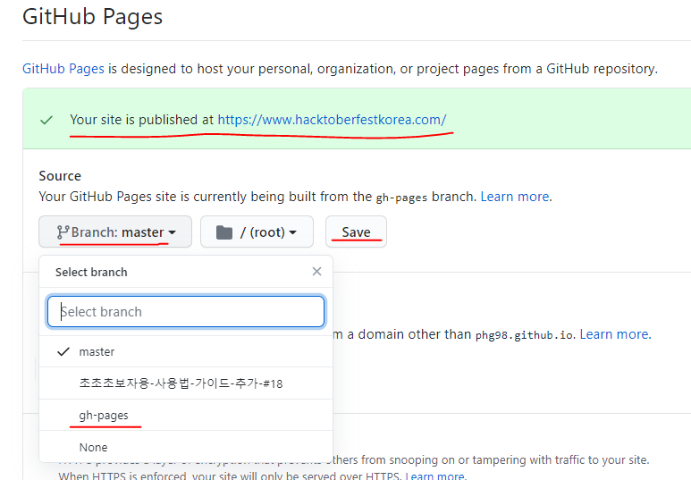

작업환경 구성하기
이 사이트는 Python과 mkdocs-material를 사용해 만들어졌습니다
공통
아래 있는 모든 명령어는 cmd를 관리자 권한으로 실행 후 실행합니다
GitHub 저장소 포크
phg98/hacktoberfestkorea --> [자신의GITHUB닉네임]/hacktoberfestkorea
workflow 활성화하기
해당 단계를 실행하셔야 작업환경 설정 방법 - GitHub를 실행하실 수 있습니다.
포크한 github 저장소에서 좌상단의 'Actions'버튼을 클릭합니다. 
workflow를 활성화하기 위해 아래의 초록색 버튼을 클릭합니다. 
작업환경 설정 - Local
작업하고싶은 폴더로 이동
(예시)
cd C:\Users\a0103\Documents\hacktoberfestkorea
저장소 복제
git clone https://github.com/[자신의GITHUB닉네임]/hacktoberfestkorea.git
git clone 명령어 사용시 repository에 있는 모든 내용이
C:\Users\a0103\Documents\hacktoberfestkorea
에 저장됩니다 이 경로는 예시이며 빌드시 원하는 경로를 직접 선택하시면 됩니다
Python 설치
Material for MkDocs 설치
pip install mkdocs-material
설치 완료시(예시):
Successfully installed livereload-2.6.3 lunr-0.5.8 markdown-3.2.2 mkdocs-1.1.2 mkdocs-material-6.0.1 mkdocs-material-extensions-1.0.1 pymdown-extensions-8.0.1
작업폴더로 이동
(예시)
cd C:\Users\a0103\Documents\hacktoberfestkorea
웹사이트 확인하기
mkdocs serve
명령어 실행후 localhost:8000에 접속합니다
작업환경 설정 방법 - GitHub
웹사이트 확인하기
'Settings'탭을 누릅니다.

중간쯤의 'Github Pages'항목에서 'Branch:Master'버튼을 누르고 'gh-pages'를 선택한후 'save'버튼을 누릅니다.

1분정도 기다리면 'Your site is published at https://<계정이름>.github.io/hacktoberfestkorea'라고 표시됩니다.
링크부분을 클릭하면 웹사이트가 표시됩니다.
수정한 부분이 잘 반영되었는지 확인해 보세요.